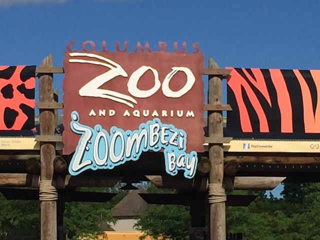
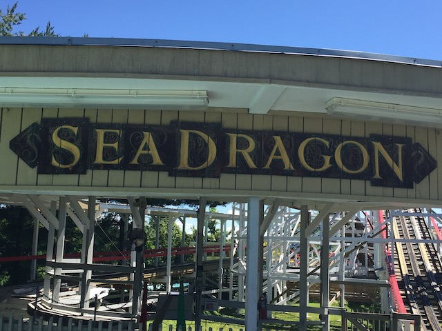
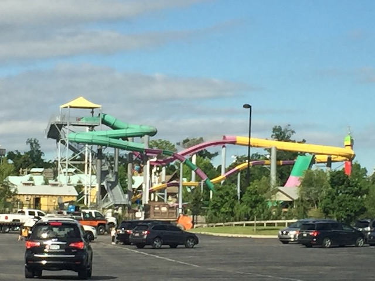
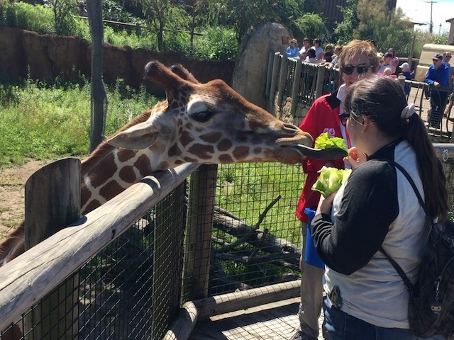

| |
Columbus Zoo Review

Columbus Zoo is a place with a very intersting history. One thing to note is.....this is not a theme park. Yes. There are a couple of roller coasters, some rides, and a water park here. Enough for us to visit as well as for it to get its own park review (Hey, if I can review sh*tty credit whoring places, I can review a zoo with a roller coaster). While it is true that it does have a couple coasters and rides, this place is a zoo first and a theme park/water park second. Yes, there are plenty of parks that are considered animal parks and also function just as much as a zoo. However, a place like Busch Gardens Tampa is a theme park first and a zoo second. The only place I've been to that also seems to be the zoo/aquarium first would be Sea Paradise, which is primarily an aquarium with only one major ride worth visiting as a coaster enthusiast (So lame that they removed Blue Fall! BOO!!! ='( ). But even so, that's apparently a kickass aquarium according to others. And just judging the Columbus Zoo as a zoo (it's also apparently got an aquarium section as well). No seriously, credit whoring aside, I had a BLAST just visiting this place as a zoo. It really seemed like a VERY fun place to visit if you were just going to see the animals. But it's also got some fun rides. And if you want to see how it stacks up as a theme park, check down below and see for yourself.
Rollercoasters
There is a link to a review of all the Rollercoasters at the Columbus Zoo.
(Please keep in mind that there's no review of Tidal Twister since it was under construction when I visited and opened up about a month later. So I just missed it).
Top Coasters
Sea Dragon Review

Flat Rides
Here are the reviews of all the Flat Rides at the Columbus Zoo. And what a shock. Nothing here is special and I didn't check any of these out. The most riveting flat ride they have would be their flyers. Mission Macaw. Those are fun, and hopefully, you can snap these. They also have a pirate ship, a scrambler, a Big Frog Hopper, some chairswings, a paratrooper, a music express, a ferris wheel, and a carousel. Nothing special. But if you enjoy old school classic flat rides, you can ride some while enjoying the animals.
Water Rides
The only thing that could possibly be a water ride would be their Dinosaur Boat Ride. At first glance, this is probably just an outdoor dark ride with a boat track, much like It's a Small World (only outdoors). But....it claims it could get you wet. Not sure if that's a serious threat or if they're just covering their asses in the off-chance a guest gets splashed and they can point to that and say "We warned you" to silence those types of complaints. Judge if this is a water ride or a dark ride for yourself.
Water Park
And then there's their water park. Zoombezi Bay. While I never got to check the place out, I did look at it from a distance. And....this unironically seems like a really cool water park! I mean, I see a water coaster! That alone is badass (and probably the best ride at the Columbus Zoo in all honesty). And the other water slides seem to include a Tornado, a Tube Toilet Bowl, a Drop Slide, a Mat Racer, among several others. That honestly just seems like a pretty good water park. I know when I get back here, I am SO checking out their water park.

This unironically looks like a really cool waterpark.
Dining
I did not eat at the Columbus Zoo. And honestly, it doesn't appear that anything there really stands out as far as the food department is concerned.
Theming and Other Attractions
Here are the reviews of all the other stuff at the Columbus Zoo. As far as theming goes, there's essentially none. Yeah. You get a litof themting here and here in the zoo to try and give off the aspect of being in different parts of the world, to correspond with the animals they're displaying, such as having an Africa section, an Asia section, an Australian section, an Arctic section, and a North American section (Hey guess what!? We're already in North America!). Not the best theming, but they do what they can to try and match what the area they're emulating. And as far as other things to do, there's by far the most obvious example of that. The thing that it's known for. It's in the f*cking name. That's right. The zoo. Cause putting all the stuff Incrediblecoasters focuses on aside, the Columbus Zoo is a fantastic zoo. They have a wide range of animals, are rated highly by a ton of conservation groups (For those who consider zoos and aquariums to be torture *rolls eyes*). And they just have so much to offer in that regard. Anyone who loves animals should TOTALLY visit the Columbus Zoo. But zoo aside, anything else? Well...they apparently also have a golf course. I don't play golf or care. But I'm sure plenty of people do care about that.

"Feed the giraffes. Tuppence a bag".
In Conclusion
While the Columbus Zoo is not an amazing amusement park, that's because I'm comparing it by amusement park standards. It's a zoo first and foremost. And as a zoo, it truly does a FANTASTIC job. It has a ton of stuff to check out, a ton of exhibits, and is totally a place you could spend all day at. As for it as a theme park.....think of it as more of an appetizer with the zoo itself being the main course. Yes. It's nice to get credits, and those flat rides are fun. But let's be real. The animals are the real reason you should check out the Columbus Zoo. And that's not even getting into the Zoombezi Bay water park, as that actually does seem like a decent water park. So despite me being a coaster enthusiast, I genuinely want to come back and have a full day at the Columbus Zoo. Not only because they have a new credit (and by credit whoring standards, a spinning mouse is a decent sized addition), and a cool looking water park, but it's just a great zoo that I had a ton of fun at. So yeah. I undeniably give this a thumbs up and totally recommend checking it out if you're in Columbus. And EPSECIALLY if you're an animal lover.
Enthusiast FAQs.
*Are there kiddy coaster restrictions? - No. There are no restrictions for Sea Dragon.

Tips
*Get all the credits.
*Don't treat the place as a credit whoring stop. It's genuinely a really cool zoo.
*Don't wear bloody clothes with chainsaws on them (You don't want to scare the dolphins).
*Have Fun!!!
Theme Park Category:
Animal Park
Location
Powell, Ohio, U.S.A
Last Day Visited
June 22, 2021
Video
There will most likely never be a Columbus Zoo video.
Complete Update List
2021
East Coast Trip 2021
Here's a link to the parks website.
Home
|